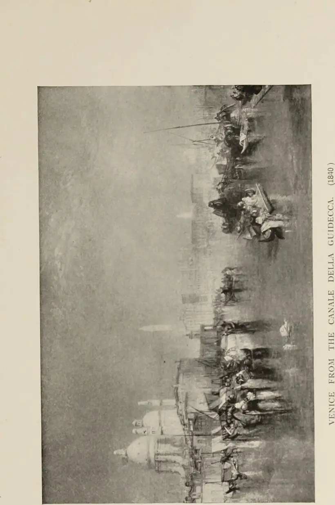
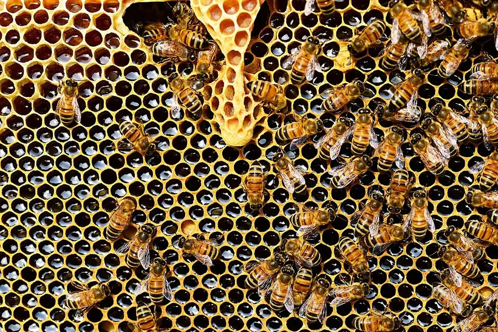

The puzzle
Human females are unusual in living well past the end of fertility — decades, in a species where most mammals reproduce until death. Menopause is not obviously adaptive, since natural selection is usually indifferent to what happens after reproduction stops.
Maps, diagrams and images




The proposal
Kristen Hawkes and colleagues proposed in the 1990s that post-reproductive women increased their grandchildren's survival by provisioning weaned children, allowing mothers to wean earlier and have the next child sooner. Fieldwork with the Hadza in Tanzania found that grandmothers' foraging contributed to grandchildren's nutrition, and that the presence of a grandmother correlated with grandchildren's weight.
The alternative explanation is the 'patriarchal transfer' of resources, or simply that longevity is a by-product of other adaptations, and that grandmothering is a consequence rather than a cause. Data from other populations have been mixed: some find grandmother effects, others do not, and the effect may depend on residence patterns and on which grandmother.
Documented: human post-reproductive longevity, and its rarity.
Supported: grandmother provisioning in some populations, with measurable effects.
Contested: whether grandmothering caused menopause or followed it.
Mixed: cross-cultural evidence, dependent on residence and ecology.
The honest label: live debate — a well-formed hypothesis with real field data and no consensus.
Why it is in the archive
Because it is a case where the evolutionary story is testable with field data, and where the data have been collected — which is rarer than the number of evolutionary stories suggests.
Open resources on this topic
- PapersOpen-access articles: DOAJ · PubMed Central · Internet Archive Scholar
- BooksPublic-domain and borrowable copies: Open Library · Project Gutenberg · Google Books · Internet Archive
More images
Cite this page
Momin, S. (2026). The Grandmother Hypothesis. The Larger World Archive. https://drsamonline.github.io/LARGE_GLOBE/grandmother-hypothesis.htmlMomin, Sohil. “The Grandmother Hypothesis.” The Larger World Archive, 2026, https://drsamonline.github.io/LARGE_GLOBE/grandmother-hypothesis.html.Momin, Sohil. “The Grandmother Hypothesis.” The Larger World Archive, 2026. https://drsamonline.github.io/LARGE_GLOBE/grandmother-hypothesis.html.@misc{the2026grandmother,
author = {Momin, Sohil},
title = {The Grandmother Hypothesis},
year = {2026},
howpublished = {The Larger World Archive},
url = {https://drsamonline.github.io/LARGE_GLOBE/grandmother-hypothesis.html},
note = {Last reviewed 20 November 2026}
}Last reviewed 20 November 2026 · Corrections policy · this page is not peer reviewed
Sources for this page
- Wikipedia, “Grandmother hypothesis” — the proposal and the evidenceen.wikipedia.org
- Wikipedia, “Menopause” — the evolutionary puzzleen.wikipedia.org
- Wikipedia, “Hadza people” — the population in the key fieldworken.wikipedia.org
- Wikipedia, “Life history theory” — the frameworken.wikipedia.org